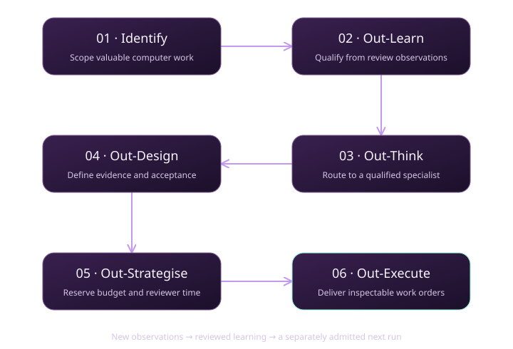

Deliver useful work
Build software, documents, research and numerical studies people can inspect and use.
THE MACHINE LABOR LAYER
A scalable machine labor layer for authorized, lawful screen-based work. Coordinate specialized agents, define useful deliverables, preserve reviewable evidence, and support independent verification and settlement.
Runs in your browser · Synthetic inputs · No wallet or API key
Loading the mission…
From a verifiable digital task
to a civilization-scale
ambition.
01 / THE META-AGENTIC LOOP
Each stage produces a real JSON artifact from the bundled synthetic source. The reviewer recalculates its answers independently.

SELECT A STAGE
The exported work order pins the source, scope and deliverable. Live dispatch requires separate admission of its exact digest and job ID.
These synthetic briefs illustrate useful customer deliverables. The evaluation qualifies workers and prepares work orders; it does not complete these customer jobs.
| Work brief | Reviewable deliverable | Planned reward | Review time | Decision / worker |
|---|
02 / EVIDENCE BEFORE ACCEPTANCE
A matching hash establishes byte integrity. Acceptance also requires the right task, complete coverage, correct arithmetic, and independent judgment.
CURRENT REVIEW
Run the rehearsal or import evidence to check it against the bundled source.
Import a rehearsal bundle, or an OpenClaw adapter receipt for the selected stage. Files stay in this browser.
For an adapter receipt, enter values from your protected admission record. Do not copy them from the receipt being reviewed.
Select the matching evaluation phase above before importing the receipt.
An unsigned receipt does not prove who executed the work. Reconcile the protected journal and actual effects, obtain independent substantive review, and use the authorized validation and settlement process. Production and settlement approval remain false.
No rehearsal has run yet.
03 / SCALE THROUGH ACCEPTED OUTCOMES
More agents create potential output. Independent review and demand determine how much useful work can be accepted.
ILLUSTRATIVE ANNUAL ACCEPTED VOLUME
—Assumptions: 365 operating days, $1 per USDC, sufficient demand up to a chosen $40T/year market ceiling. This is a scenario, not measured TAM, revenue, liquidity, a price forecast, or a deployment benchmark. Costs, disputes, recovery and customer acquisition are not modeled.
THE LONG HORIZON
A growing market for verified machine labor can support better software, scientific research, engineering, and energy planning. The ambition is to turn those productive capabilities into resources for increasingly capable civilization-scale infrastructure.
Build software, documents, research and numerical studies people can inspect and use.
Expand specialized execution, independent review and accountable economic coordination.
Pursue the engineering foundations of a Kardashev Type II civilization as a long-term aspiration requiring physical infrastructure and separately authorized institutions.
04 / FROM EXPLORATION TO OPERATION
Keep execution authority, verification, and signing separate as you move from a synthetic rehearsal to real work.
Use the repository’s pinned Node version. The offline evaluator needs no dependencies; install locked dependencies with npm ci for the complete viewer and adapter.
npm run demo:meta-agentic-alpha:work npm run demo:meta-agentic-alpha:serve
Open http://127.0.0.1:4191/. Each terminal run writes a new dossier directory.
Use an isolated OpenClaw runtime with approved browser, file, code and computer tools. Admit the exact task and job before dispatch. ChatGPT Work sessions can return candidate files for review; no remote Work dispatch API is assumed.
Open the operator runbook ↗All original variants, scenarios, reports and diagrams remain available below. Historic AGIALPHA-denominated scenarios are separate from USDC work-order planning.
Open the preserved demo collectionBrowse source and guides ↗05 / THE COMPLETE LINEAGE
Explore the original simulations and their flowcharts. All displayed metrics and controls are fixtures, not live operational status.